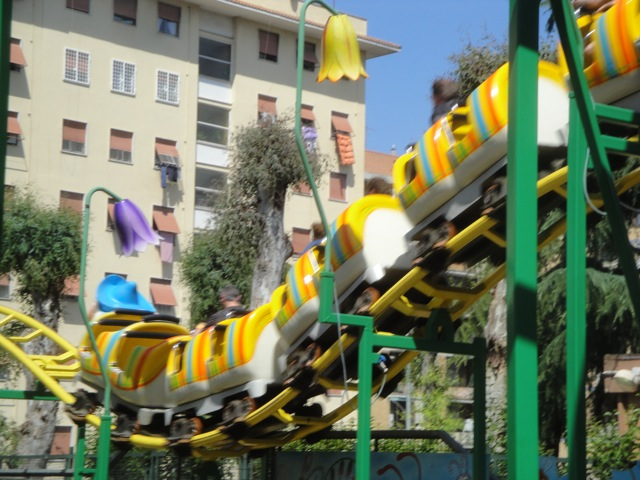
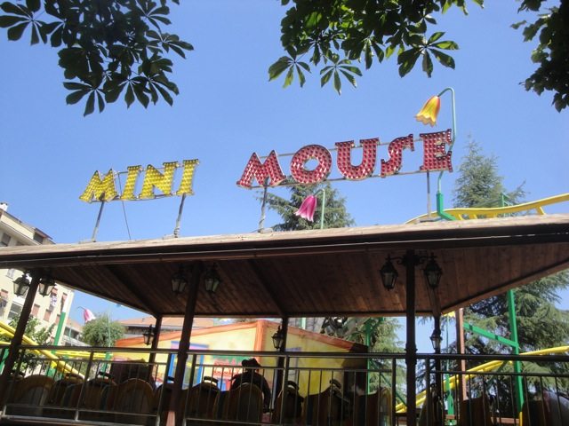

| |
Mini Mouse Review

Once you get in the seat, you out of the station and away you go. We roll around a slow curve and head towards the lift hill. After climbing up the 10 ft lifthill, you go around a turn and go through a small little house. Shockingly enough, there's no Disney characters living inside. But don't worry. You'll still see some on this ride. We then head down a small drop that actually gets us going faster than walking speed. Whoa! We then rise up and go around another turn, getting a nice view of suburban Rome. We then head down another drop, with trims of course. Don't want too much excitement. We then go around a turn, look at the wall and...I KNEW IT!! DISNEY CHARACTERS!!! Specifically, the crew from A Bugs Life. And now we go around several more times. Cha-Ching.
2/10
Location: Oasi Park
Opened: 2007
Built by: Intrapark
Last Ridden: June 17, 2012
Mini Mouse Photos

|